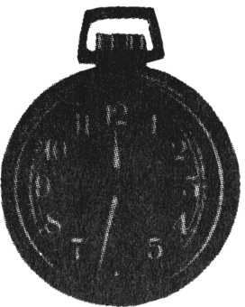
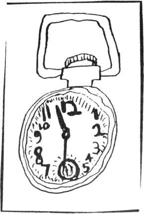

Cep saatimi Jose'ye vererek çizmesini istedim. O zamanlar 21 yaşındaydı. Zihinsel yönden özürlüydü ve durumunun umutsuz olduğu söyleniyordu. Az bir zaman öncesinde çok ciddi bir nöbet geçirmişti. Zayıf ve kırılgan bir tipi vardı.
Saatimi çizmesini istediğimde, hareketliliği, dalgınlığı aniden kayboldu. Saati dikkatle eline aldı, sanki elinde bir mücevher veya sihirli bir nesne tutuyor gibiydi. Masaya bıraktıktan sonra hareketsiz bir biçimde dikkatini saate verdi.

Hastabakıcı "Boşuna ona sorma, saatin ne olduğunu bilmez, zamanı söylemeyemez, konuşamaz bile. Onun otistik olduğunu söylüyorlar ama bana sorarsan o bir geri zekâlı." dedi. José'nin beti benzi soldu. Hastabakıcının, söylediği kelimelerden çok, söyleme şeklinden ve tonundan etkilendi galiba. Zaten hademe de José'nin kelimeleri kullanmadığını söylemişti.
"Hadi José yapabileceğini biliyorum." dedim. José büyük bir sükûnet ve dikkatle çiziyordu. Bunun dışında her şeye kapatmıştı kapılarını. İlk defa duraksamadan, cesaretle ve soğukkanlılıkla bir şey yapıyordu. Hiç silmeden düzgün çizgilerle çiziyordu.
Hemen hemen her hastamdan bir şeyler yazmasını veya bir şeyi çizmesini isterim. Hem kabaca bazı becerilerini kontrol etmiş olurum hem de karakter özellikleri ve tarzlarıyla ilgili bilgi edinirim.
José saati kayda değer bir doğrulukla çizmişti. Hemen hemen tüm özellikleri eklemişti. Sadece saatin ismi 'Westclox'u, 'darbelere dayanıklı' ve 'Amerikan malı' gibi yazıları atlamıştı. Ama zamanı doğru çizmişti tam 11:31, her saniyeyi, kurma düğmesini, halkayı, her şeyi çizmişti. Diğer özellikler hemen hemen ölçülü çizilse de ucundaki halka büyütülmüştü. Ayrıca sayılar da farklı karakterde, büyüklükte ve kalınlıkta çizilmişti. Saatin içindeki saniye göstergesi de öne çıkarılmıştı.
Hastabakıcının sözlerine rağmen, José'nin çizimi, saati genel olarak kavradığına ve saatin çağrıştırdığı hissi anladığına dair çarpıcı bir kanıttı. Eğer durum bu değilse, ortada garip bir çizim karışımı vardı. (Takıntılı denecek ölçüde düzgün bir çizim ile, komik ve abartılı bir çizimin karışımı).
Eve dönerken bunu düşünüyordum. Kafam karışmıştı. Geri zekâlı mı, otistik mi? diye sordum kendi kendime. Hayır bunlardan çok daha başka bir şeyler vardı ortada.
Bu ilk görüşmemden sonra bir daha José'yi görmek için çağırmadılar. Zaten ilkinde de acil olarak çağrılmıştım. Hafta sonu boyunca nöbet geçirmişti, akşam telefonla ilaçlarının değiştirilmesini söylemiştim. Nöbetleri kontrol altına alındığından dolayı, artık nörolojik bir yardıma ihtiyacı kalmadığını düşünmüşlerdi. Yine de çizdiği resimde, fark ettiğim bazı şeyler, bana onunla ilgili çözülmemiş bir sır olduğu hissini veriyordu. Onu yeniden görmeliydim. Görmeden önce raporlarına bakmak istedim ama bana sadece bir konsültasyon kâğıdı verdiler. Bu kâğıtta da pek bir bilgi yoktu.
José kliniğe salaş bir kıyafetle geldi. Neden kliniğe gönderildiği hakkında bir fikri yoktu belki de umursamıyordu. Beni görünce gülümsedi. O sıkıntılı ve ilgisiz bakışı gitmiş yerini utangaç bir gülümseme almıştı.
"Uzun zamandır senin hakkında düşünüyorum José." dedim. Kullandığım kelimeleri anlamasa da sesimin tonundan beni anlıyordu. Ona kalemimi verdim ve "Birkaç resim daha çizer misin?" diye sordum.
Bu sefer ne çizdirmeliydim acaba? Her zaman yanımda, Arizona Highways isimli bol resimli dergi bulunurdu. Bu dergiyi nörolojik testlerim için kullanırdım. Derginin kapağında bir gölde kano kullanan insanları gösteren huzurlu bir manzara resmi vardı. Arka planda dağlar ve güneşin batışı görülmekteydi. José en yakındaki koyu, gölgelenmiş göl kenarını çizmeye başladı. Kalemle ince ince gölgelendirme yapıyordu ama bu ancak fırçayla yapılabilecek bir işti, nazik uçlu bir kalemle değil. "Boşver gölge yapmayı, Kanoya geç." dedim. Hiç duraksamadan, hızla siluet halindeki insanları, kalemle belirledi. Sonra resme tekrar baktı. Ardından gözleri uzaklara daldı, o sırada şekli zihnine yerleştiriyordu. Sonra kalemle tamamını çizdi.